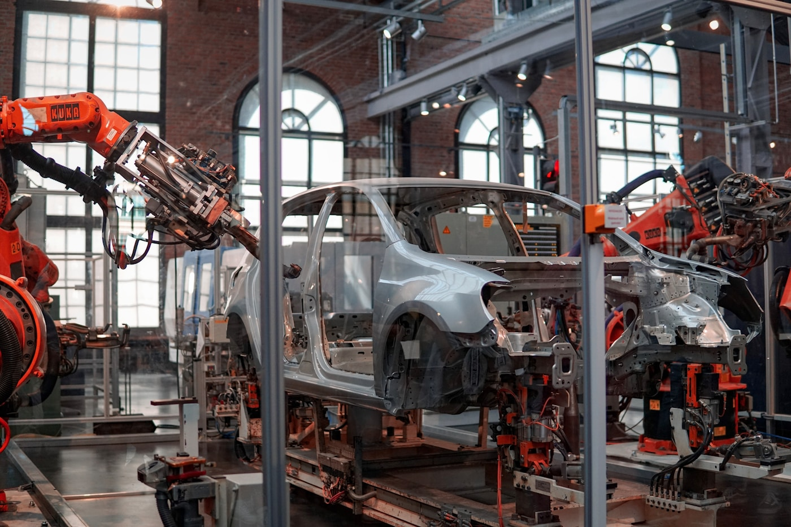
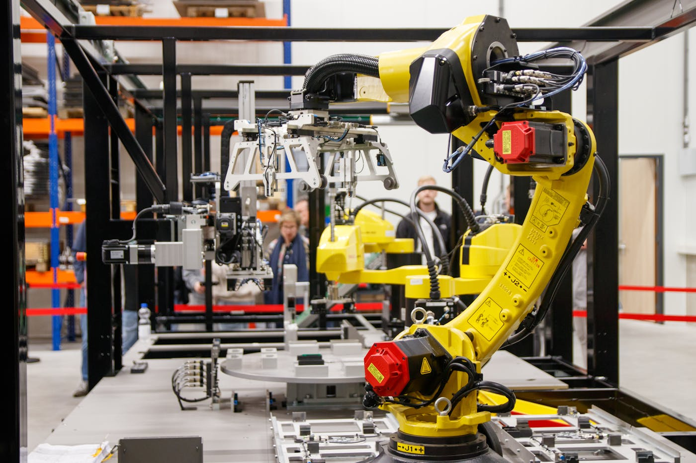
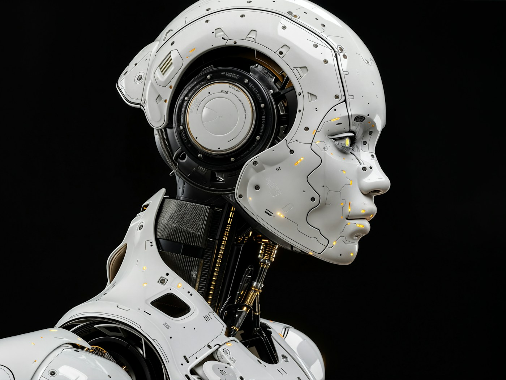
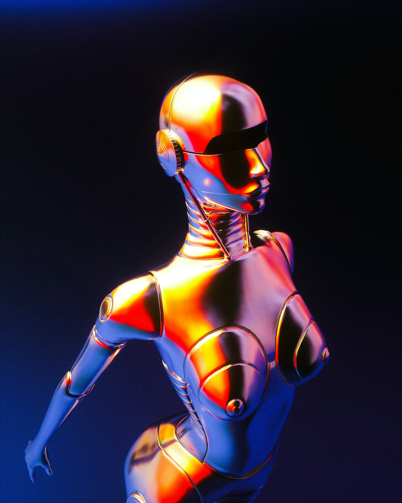

10年で自己改善ループは起きないという直感は、なぜ外れるか

ある自動車メーカーで30年間ライン設計を担ってきた熟練エンジニアが、会議室の片隅でこう言ったとしよう。「ロボティクスがそんなに早く進むわけがない。10年やそこらで自己改善なんて絶対ない。現場を知らない人間が言うことだ」。発言は具体的な重みを持っている。彼は実際にロボットが工場のどこで詰まるかを知っている。部品公差が0.1mmずれた瞬間に停まるラインを、何百回も手で直してきた。その体験から組み上がった経験則は、会議室のAI楽観論より遥かに地に足がついている。
この直感は正当だ。ただし、ある時代の経験則としては、という条件付きで。1995年から2020年までのロボティクスは、専用治具と固定プログラムの世界だった。ワークが1mmでも傾けば停まる。新しい部品を流すには数週間の段取り替えが要る。この25年の経験を線形に延ばせば、汎用ロボットが非構造化環境で自律的に働く未来はあと数十年は来ない。熟練者の直感はこの直線の上に立っている。
しかし問題は、2022年から2025年の3年間で、この直線が折れたことだ。視覚-言語-行動モデル（VLA）と呼ばれる新しい系列の論文が、ロボティクスのスケーリング則を実証し始めた。Google DeepMindのRT-2は2023年7月に発表され、訓練で一度も見ていない物体に対して62%の成功率でゼロショット操作を成立させた[1]。翌2024年10月、Physical Intelligence社のπ0は、洗濯物を畳む、箱を組み立てるといった10分級のロングホライゾンタスクを、複数のロボット本体にまたがって実行した[2]。2025年4月、π0.5は訓練で見たことのない他人の家のキッチンで、10分から15分かけて皿洗いを最後まで完遂した[3]。2025年3月、DeepMindはGemini Roboticsを発表し、9月にはGemini Robotics 1.5でAloha、Apptronik Apolloを含む複数の身体に同じモデルを流用できることを実証した[4]。
記事の狙いは楽観論の流布ではない。問うのは一点だけだ。「絶対ない」という経験則が、2020-2025の事実の前で持ちこたえるか。そして、なぜ専門家の「絶対ない」は、非連続な技術が到来する直前に最も強く発せられるのか。アンカリング、指数関数バイアス、専門家の権威バイアス。認知科学が特定したこの三つのメカニズムが、チェス（1957年→1997年）、機械翻訳（1966年→2016年）、囲碁（1990年代→2016年）、蛋白質構造予測（2018年→2020年）で繰り返し同じパターンを生んできた。ロボティクスの熟練者が2026年に「絶対ない」と言うとき、彼は過去4回の「絶対ない」と構造的に同じ場所に立っている。
横ばい25年への固着
1995-2020のロボティクスは専用治具と固定プログラムの世界だった。この25年を線形に延ばせば「10年で自己改善」はありえない。経験則が判断のアンカーになり、非連続な変化を過小評価させる。
折れた曲線が見えない
2022-2025にVLA（視覚-言語-行動）モデルが登場し、RT-2、π0/π0.5、Gemini Roboticsがゼロショット汎化を実証した。3年で概念ごと出現した変化を、脳は直線的に知覚する。
専門家ほど強く誤る
チェス、翻訳、囲碁、蛋白質構造。「絶対ない」を最も強く発した者は、例外なくその分野の実務経験が最も豊富な専門家だった。深い知識が、パラダイムシフトへの感度を下げる。
ロボット基盤モデルという新しい曲線

熟練者の直感が成立していた時代の前提は三つある。第一に、ロボットは特定タスク向けに明示プログラムされなければ動かない。第二に、新しい環境・物体・照明条件への汎化はほぼ不可能で、必ず再教示が要る。第三に、データはタスクごとに別々で、他のロボットの経験を流用できない。この三前提のうち、2022年から2025年までのわずか3年間で、三つとも崩れた。
起点は2022年4月、GoogleのSayCanだった[5]。大規模言語モデルが「コーラを持ってきて」という自然言語の指示を、ロボットが実行可能な動作列に分解する。2023年7月、同じGoogle/DeepMindがRT-2を発表する[1]。ここで決定的な切り替えが起きた。ウェブスケールの画像-テキスト事前学習を、そのままロボット制御の出力層に接続したのだ。RT-2は訓練データに存在しない物体カテゴリに対して、従来モデルの2倍近い汎化性能を示した。同じ2023年、Google、DeepMind、Stanford、Berkeley、UTokyo、NYUを含む34機関が共同でOpen X-Embodimentを公開する[6]。22種類の異なるロボット本体から集めた160万以上のエピソードを単一データセットに統合し、これで学習したRT-Xは、個別ロボット用に学習したモデルを50%上回る成功率で汎化した。「ロボットごとにデータを取る」という前提が初めて破れた瞬間だ。
2024年10月、OpenAI、DeepMindから分派したChelsea FinnとSergey Levineが率いるPhysical Intelligence社が、創業1年弱でπ0を公開した[2]。π0はVision-Language-Action flow modelと呼ばれる構造で、毎秒50ステップの高頻度制御ポリシーを吐く。洗濯物を畳む、ダンボール箱を組み立てるといった、従来の産業ロボットが苦手としてきた変形物と長時間タスクで連続成功を記録した。2025年4月、π0.5が公開される[3]。この版が決定的だ。訓練に含まれていない他人の家のキッチンに持ち込まれ、10分から15分かけて皿洗いと片付けを最後まで完遂した。「新しい家」は事前学習で見ていない環境である。人間が子どもに「台所を片付けて」と言うときの汎化に、初めて届いた。
2025年3月、DeepMindはGemini Roboticsを発表する[4]。基盤モデルGemini 2.0を土台に、物理行動を新しい出力モダリティとして追加した。同年9月のGemini Robotics 1.5では、Aloha bi-arm、Apptronik Apollo（ヒューマノイド）、Franka研究用アームを含む異なる身体に対して、同じモデルがそのまま転移することが示された。身体の設計に縛られないポリシーという概念が初めて実装された。NvidiaのGR00T（2024年3月発表、2025年にN1として更新）は、ヒューマノイド向けの汎用基盤モデルとして同じ路線を走っている[7]。
縦軸はvision-language-actionモデルの「訓練に含まれない新環境・新物体への汎化成功率」の定性推移。各点は論文公開時点で報告された代表的指標。線形外挿（点線）に対して実測は折れ上がっている。
Sources: RT-2 (Brohan et al. 2023), RT-X (Padalkar et al. 2023), π0/π0.5 (Black et al. 2024, 2025), Gemini Robotics (DeepMind 2025)
現場の無人化は「まだ」ではなく、すでに起きている
論文の話はここまでにして、現場の数字に移る。熟練エンジニアの直感の背後には、「論文は論文、現場は現場」という健全な懐疑がある。妥当だ。ではその現場で、2024年から2025年に何が起きていたのか。
オーストラリア、西オーストラリア州のピルバラ地区。Rio Tintoの鉄鉱石鉱山だ。2008年から試験運用を始めた小松製作所の自律運搬システム（AHS：Autonomous Haulage System）は、2024年8月に300台目の納車を迎えた[8]。この300台は10鉱区に配備され、Rio Tintoの日次生産能力のおよそ80%を担う。Rio Tinto自身が公表する累計輸送量は、2018年の10億トン達成を経て、2024年時点で約48億トンに達している[9]。運転席に人間はいない。Rio Tintoは自律運搬導入以降の安全指標の改善を公表しており、運搬業務の死傷リスクは大幅に低下したと報告している。
これは「将来の可能性」ではない。2026年4月の今、稼働している物理事象だ。鉱山という、温度・粉塵・振動・未舗装路という、ロボティクスに最も不利とされてきた環境で、人間の判断を要しない自律運搬が1日24時間動いている。Caterpillarの競合システム（Cat MineStar Command for hauling）も同種の運用に達しており、両者合わせて世界の露天掘り鉱山の自律トラック台数は2024年時点で1000台を超える[10]。熟練エンジニアが「現場の人間の判断が要る」と言うとき、想定している現場の一部は、すでに人間から離れて久しい。
半導体製造に目を移す。TSMCは先端ノードのGigafabについて、**スマート製造と夜間省人運用**（同社CSRレポートで"smart manufacturing" "AI-powered fab"と表現）を継続的に拡張しており、フォトリソグラフィ・ウェハ搬送・検査の組み合わせで、人的介入を極小化した工程が複数存在する[11]。日本のFANUCは富士山麓の本社工場で、ロボットがロボットを組み立てるラインを1990年代から維持している。Amazon Roboticsは2022年6月にProteusを発表し、人間と共存できる初の自律移動ロボットとして倉庫に導入した。2024年時点でAmazonは75万台以上のロボットを自社物流網で稼働させており、これは世界最大のロボット艦隊である[12]。BMWはSpartanburg工場で、車体組立工程の大半をロボット化しており、業界平均（自動車組立のロボット密度）を上回る水準で運用している[13]。
論点の整理が重要だ。熟練者が「無人化はまだない」と言うとき、厳密には「閉ループとしての完全無人化された自己再生産」がないことを指している。これは正しい。No.08「産業爆発の隠れた前提」で論じた通り、鉱山から半導体、ヒューマノイド量産までの閉ループはまだ閉じていない。だが熟練者の結論――だから「10年で自己改善は絶対ない」――には、もう一つの命題がそっと挟まっている。「個別工程の無人化もほとんど進んでいない」という含意だ。この二つはまったく別の命題だ。前者（閉ループの不成立）は真、後者（個別工程の自動化停滞）は偽。工程別の自動化率を積み上げると、2015年と2025年の現場は、質的に異なる。熟練者の直感は、この二つをすり替えた上で成立している。
数値は各事業者の公開発表・年次報告に基づく推定。「0%」は人間の物理介在なしに完了する工程の比率で、判断・監視の全廃を意味しない。器用操作汎化はVLAモデルのベンチマーク値（ALOHA, RT-2等）を参照した相対値。
Sources: Rio Tinto 2024, Amazon Robotics, BMW Spartanburg reports, TSMC 2023-24, RT-2 benchmark data
コスト曲線がロボティクスに到達したとき

ここでもう一本の曲線に切り替える。性能だけでなく、価格だ。Wrightの法則は1936年にT.P. Wrightが航空機製造を観察して定式化した経験則で、累積生産量が倍増するごとに単位コストが一定率で下がる。太陽光パネルは半世紀にわたって学習率20%前後を維持し、2010年代以降は指数的な普及を生んだ。リチウムイオン電池は18%前後。両者に共通するのは、需要が生まれた瞬間に累積生産が急拡大し、コスト低下が加速したことだ。
ロボティクスでは、この曲線がまだ本格的には始まっていなかった。理由は単純で、**汎用ロボットの需要が存在しなかった**からだ。IFR（国際ロボット連盟）の統計によれば、産業用ロボットの年間出荷は2010年代半ばまで年20-30万台、2021年以降は年50万台超に拡大したが、これらは専用治具に組み込まれた固定タスク用のアームが中心だ。人型や汎用操作の市場は、2024年時点でも事実上未成立である。しかし、2025年時点で構成部品の価格低下は先行して始まっている。LiDARは2010年代初頭にVelodyneが約$75,000で販売していた64チャンネル機が、2017年に$17,900、2020年にはVelodyneが自動車グレードLiDARの$500以下を目標として公表し[14]、2024年時点で複数メーカーがその水準で量産している。2017年から2024年の7年間で、Velodyne一社だけで約36倍の価格低下だ。Hesai、Luminar、中国勢の参入でさらに圧縮が続いている。
GPUの学習あたりコスト効率は、Epoch AIの追跡によれば年率約30-40%のペースで継続的に改善している[15]。2010年代後半以降だけで一桁以上の効率向上が積み上がっており、AIモデル学習の経済性は数年ごとに塗り替えられている。電動モーターとアクチュエータは、電気自動車の量産によってコスト低下が始まった副産物で、ヒューマノイド向けのサーボドライブは2020年から2025年で半減近い水準まで落ちている[16]。それでもここまでは構成要素の話で、ヒューマノイド本体はまだ量産前だ。学習率が効くのはこれからである。
公表された目標価格を並べる。Tesla Optimusは2024年のAll-Hands会議でElon Muskが$20,000-30,000を目標と述べた[17]。Unitreeの中国製ヒューマノイドG1は2024年時点で$16,000前後で販売されている[18]。Figure AIの02は企業向けで未公表だが、Brett Adcockは2025年の公開インタビューで量産効果を折り込んだ5年以内のコスト半減を明言している[19]。これらは「願望」ではない。市場が成立した後の2-3サイクルの累積倍増を前提にした計算だ。
ここで熟練エンジニアの直感に戻ろう。彼の経験則が成立していた1995-2020の25年間、ロボティクスのコスト曲線は実質的に横ばいだった。横ばいの25年を見続けた経験は、「これが世界の自然」と錯覚させる。しかし横ばいの原因は技術の内在的限界ではなく、需要不在だった。需要が生まれた瞬間、太陽光パネルと電池とLiDARが辿った曲線をロボティクスが辿らない積極的な理由は、物理的にも経済的にも存在しない。2010年の太陽光パネル業界で「10年で大規模電力源になる」と言う声は嘲笑された。嘲笑した人々は、横ばいの30年を見続けた業界ベテランだった。
縦軸は対数。LiDARは単体機械式(64ch)→ソリッドステート自動車グレードへの世代交代を含む実効価格。GPUはEpoch AIの追跡に基づく同等計算量の実効コスト。サーボはヒューマノイド向けの報道値の推定。
Sources: Velodyne (2010-2024), Epoch AI Compute Database, Nikkei/Reuters 2024-25
「絶対ない」が過去何回、同じ理由で外れてきたか

この記事は「10年で確実に自己改善ループが閉じる」と言わない。不確実性は大きい。No.08で論じた通り、採掘・精錬・半導体・エネルギーの4層が同時に閉ループを成立させる必要があり、物理層の制約は情報処理と質的に異なる。慣性・摩擦・部品公差の世界で、スケーリング則はそのまま横滑りしない。ここで扱う問いはただ一つ。「絶対ない」という言い切りが、論理的に擁護できるか。そしてなぜ、「絶対ない」と言い切る人は、ほぼ例外なくその分野の最も経験豊富な専門家なのか。
歴史を並べる。1957年、Herbert Simonは人工知能研究の草創期に、「10年以内にコンピュータがチェスの世界チャンピオンを破る」と予言した[20]。外れた。40年かかった。1997年5月、DeepBlueがGarry Kasparovを破った。Simonが間違っていたのはタイミングだけで、結果は予言通りに起きた。1966年、米国学術会議のALPAC報告書は、機械翻訳の実用化は困難でありコストが人間翻訳を上回ると結論し、米国の自動翻訳研究予算の打ち切りを招いた[21]。50年後の2016年、Google Neural Machine Translationが商用品質の翻訳を実現する。2019年、DeepLが英独翻訳で人間を超えた。
1990年代、囲碁は「人間に勝つには50年以上かかる」が業界のコンセンサスだった。2016年3月、AlphaGoがLee Sedolに4-1で勝利した[22]。翌2017年、AlphaZeroは囲碁、チェス、将棋を白紙から自己対戦だけで学習し、既存の全AIを超えた。蛋白質構造予測は50年にわたる未解決問題で、「AIには無理」が2018年時点での標準見解だった[23]。2020年11月、DeepMindのAlphaFold 2がCASP14で解決を宣言し、2021年には既知蛋白質の立体構造を全ゲノムスケールで公開した。2024年10月、この功績はノーベル化学賞になった。画像認識のImageNetベンチマークは、2010年時点で「人間水準は5年では無理」とされていた。2015年、ResNetが人間を超えた。
2017年のMcKinseyレポートは、自動化による労働代替のタイムラインを職種別に予測した[24]。翻訳、画像診断、コーディング支援、文章生成、データ分析。全ての予測が、2020-2024年の実績に対して5年から15年遅れた。2018年に研究者コミュニティで行われたAGI到達時期のサーベイは、中央値2060年だった[25]。2023年の同じサーベイでは2047年に前倒しされ、2024年のMetaculusコミュニティ予測は2030年代前半に収束している[26]。専門家の「慎重な予測」が、5年ごとに10年ずつ前倒しされている。
共通パターンがある。「絶対ない」と言った人々は、全員、その分野の実務経験が最も豊富な専門家だった。チェスのGrand Master、翻訳言語学者、囲碁のプロ棋士、構造生物学者、コンピュータビジョン研究者、McKinseyのアナリスト。彼らは現場を知っていた。だからこそ外れた。認知科学はこの構造を三つのバイアスで説明する。アンカリング：横ばい期の実績に判断が固定され、曲線が折れる可能性を過小評価する。指数関数バイアス：人間の脳は指数的変化を直線的に知覚する。Wagenaar & Sagaria（1975）の実験では、被験者は指数的成長の10年後の値を10倍以上過小推定する事例が頻出した。専門家の権威バイアス：専門知識が深いほど「この分野の困難さを知っている」という自信が強化され、パラダイムシフトへの感度が下がる。Philip Tetlockの2005年の研究では、専門分野の予測精度は非専門家と有意差がなく、むしろ過信度が高かった。
| 年 | 「絶対ない」と言った人々 | 実際に起きた年 | 何が曲線を折ったか |
|---|---|---|---|
| 1957 チェス10年 |
Simonの予言に冷笑した一般。40年は絶対無理と言う棋士層。 | 1997 DeepBlue | 探索アルゴリズムと専用ハード |
| 1966 翻訳不可能 |
ALPAC報告書に署名した言語学者たち | 2016 GNMT / 2019 DeepL | Transformerとニューラル翻訳 |
| 1990s 囲碁50年 |
プロ棋士、AI研究者の多数派 | 2016 AlphaGo | 深層学習＋MCTS＋自己対戦 |
| 2018 蛋白質構造AIに無理 |
構造生物学の中核研究者 | 2020 AlphaFold 2 | 注意機構と進化情報の統合 |
| 2026 ロボット10年絶対ない |
ライン設計30年の熟練者 | ？ | VLA基盤モデル＋Wrightの法則 |
表の最後の行に「？」が一つ残っている。この「？」を「絶対ない」で埋めるには、上記5項目のすべてに反論が要る。2022-2025の基盤モデル論文、Pilbaraの48億トン無人輸送、$500のLiDAR。これらを全て否定する論理を提示せずに「絶対ない」と言うなら、それは根拠ではなく、アンカリングの産物だ。1957年、Herbert Simonは10年と言った。間違いは時間だけだった。2026年、ラインを30年設計してきた熟練エンジニアは「10年で絶対ない」と言う。彼が間違いうるのは、やはり時間だけかもしれない。
一次ソース
- Brohan et al. "RT-2: Vision-Language-Action Models Transfer Web Knowledge to Robotic Control." Google DeepMind, 2023.07. robotics-transformer2.github.io
- Black et al. "π0: A Vision-Language-Action Flow Model for General Robot Control." Physical Intelligence, 2024.10. arXiv:2410.24164. pi.website/blog/pi0
- Intelligence et al. "π0.5: a Vision-Language-Action Model with Open-World Generalization." Physical Intelligence, 2025.04. arXiv:2504.16054. physicalintelligence.company/blog/pi05
- Google DeepMind. "Gemini Robotics 1.5 brings AI agents into the physical world." 2025.09. deepmind.google
- Ahn et al. "Do As I Can, Not As I Say: Grounding Language in Robotic Affordances (SayCan)." Google, 2022.04. arXiv:2204.01691.
- Padalkar et al. "Open X-Embodiment: Robotic Learning Datasets and RT-X Models." 34 institutions, 2023.10. robotics-transformer-x.github.io
- NVIDIA. "Project GR00T: A Foundation Model for Humanoid Robots." 2024.03 / GR00T N1 2025. developer.nvidia.com/project-gr00t
- Rio Tinto. "Komatsu and Rio Tinto celebrate 300th autonomous haul truck delivery at Pilbara operations." 2024.08. riotinto.com
- Rio Tinto. "Autonomous Haul Trucks achieve one billion tonne milestone." cumulative 4.8 billion tonnes as of 2024. riotinto.com/AHS
- International Mining. "Komatsu and Rio Tinto herald delivery of 300th autonomous haul truck." 2024.08.12. im-mining.com
- TSMC. "Corporate Social Responsibility Report 2023" — smart manufacturing and lights-out operations.
- Amazon. "10 years of Amazon Robotics: how robots help sort packages, move product, and improve safety." 2022-2024. Fleet size 750,000+ by 2024.
- BMW Group. "Plant Spartanburg automation and body shop robotization." BMW Press Release 2023-2024.
- Automotive News. "Velodyne targets sub-$500 price for lidar unit." 2020; follow-on industry reports to 2024. autonews.com
- Epoch AI. "Trends in GPU Price-Performance." Compute Trends Database, 2023-2024. epochai.org
- Nikkei / Reuters. "EV servo and actuator cost decline" 2020-2025 industry coverage.
- Tesla. All-Hands Meeting remarks on Optimus pricing target $20,000-30,000, Elon Musk 2024.
- Unitree Robotics. G1 humanoid product specifications and pricing, 2024.
- Figure AI. Brett Adcock public interviews 2024-2025 on Figure 02 and 03 humanoid deployment and cost trajectory.
- Simon, H. A. & Newell, A. "Heuristic problem solving: The next advance in operations research." 1957. Chess 10-year prediction.
- Pierce, J. R. et al. "Language and Machines — Computers in Translation and Linguistics (ALPAC Report)." NAS, 1966.
- Silver et al. "Mastering the game of Go with deep neural networks and tree search." Nature 529, 2016.
- Jumper et al. "Highly accurate protein structure prediction with AlphaFold." Nature 596, 2021. (2024 Nobel Prize in Chemistry)
- Manyika et al. "A Future That Works: Automation, Employment, and Productivity." McKinsey Global Institute, 2017.
- Grace et al. "When Will AI Exceed Human Performance? Evidence from AI Experts." 2018 researcher survey, median AGI 2060.
- Grace et al. "Thousands of AI Authors on the Future of AI." 2023 follow-up survey, median HLMI 2047. arXiv:2401.02843
- Metaculus Community. "When will the first general AI system be devised, tested, and publicly announced?" community prediction timeline, 2024 snapshot. metaculus.com/questions/5121